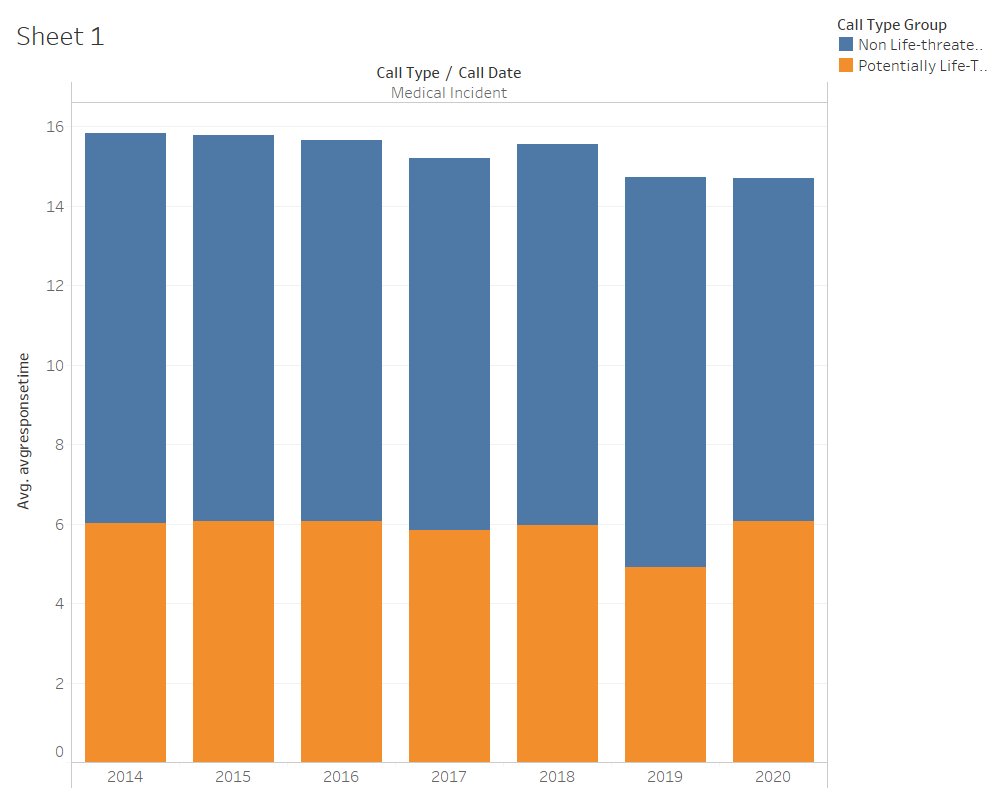
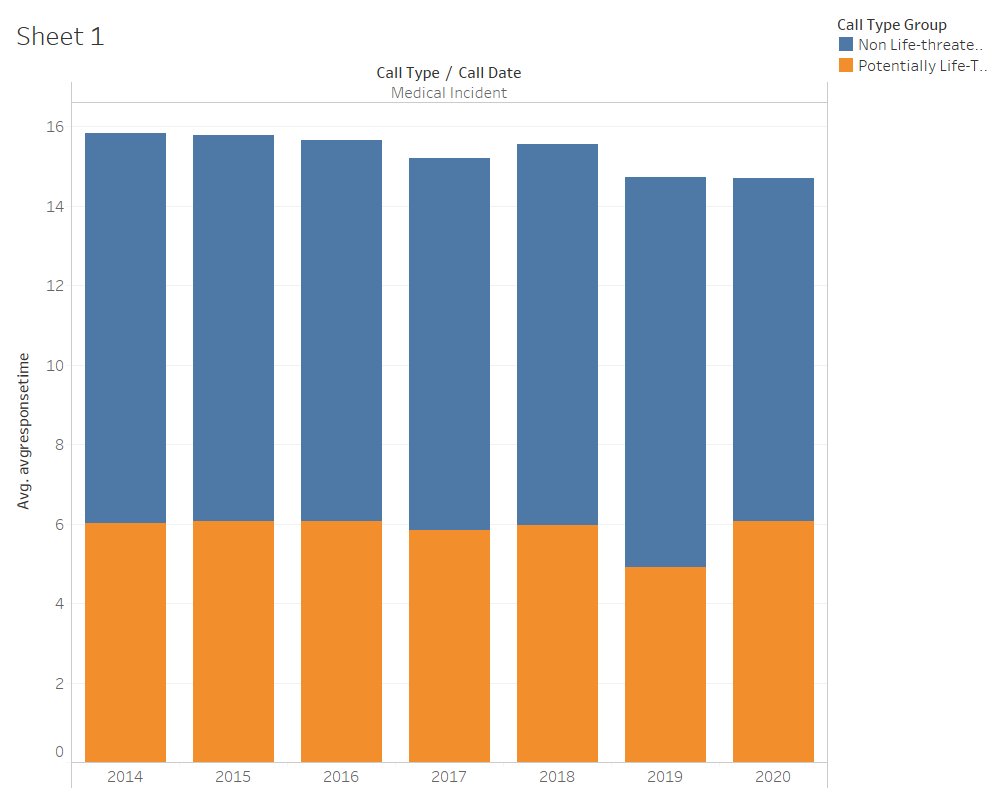

Enrique
Data wrangling
For data wrangling in this prototype we selected a five year range to see if we could find a change in the SFFD over time. This was done on the Data SF website with their data filter tool.
For this particular prototype I made an average response time using the
Prototype
 

Planned Interactivity
Side by Side Bar Chart
For interactivity for this bar graph I intend to use a tooltip to have the relevant information show up when hovering over the bar, and highlight the bar in either the
Stacked Bar Chart
For the stacked bar chart I would simply highlight the bar it was on and put a tooltip on it so as to wasily see the average response time, since it's harder to differentiate on a stacked bar chart.
Interpretation
Looking at the chart there is clearly a lag in response time when the medical incident call is non-life threatening, understandably so since there is no extreme urgency to get to the call. There is a significant increase in response time when there is a life threatening medical incident. In general over the years the non life threatening response time does not vary too much, however for life threatening calls, there is a nearly one minute average decrease (faster response time) for the year 2019. There is unavailable data as to why this is, it would be interesting to further look into other data and see what may be happening. Decrease in resposne time between life threatening and non-life threatening calls is possibly due to sirens being on or not. While the faser response time for the year 2019 could be many factors.